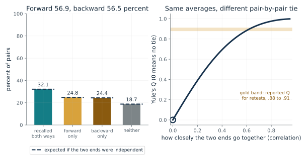
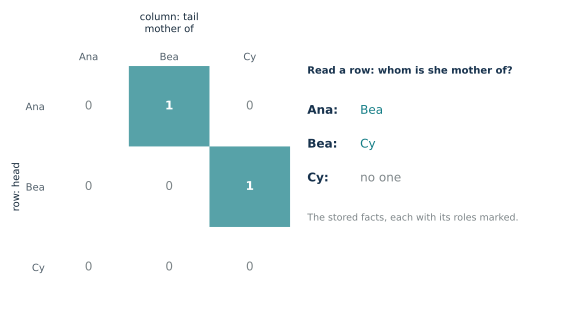
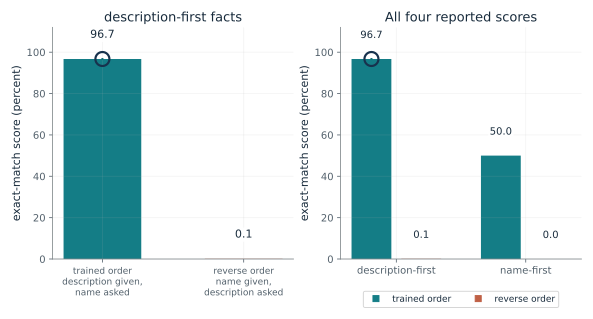
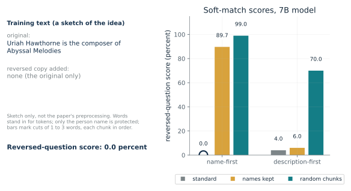
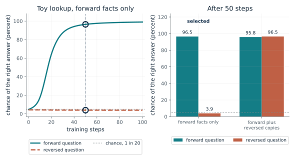
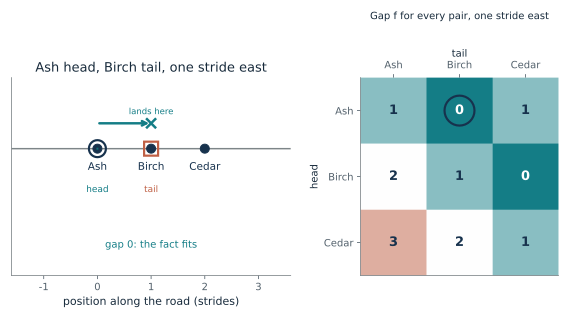
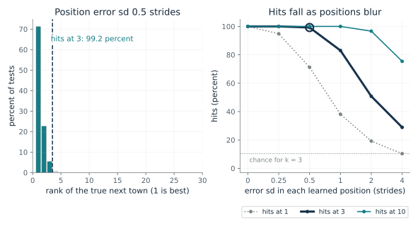

Do equal averages show that a word pair is stored both ways?
From Chapter 8, Fifteen students recalled new random noun pairs about equally well from either end
If students recall about 57 percent of pairs from either end, what would the pair-by-pair record have to look like to count against two independent links?
A pair can be recalled from both ends, one end or neither. If recall from each end were independent, the share recalled both ways would be the product of the two averages, 0.569 x 0.565. When the ends go together, that share rises while the two averages stay put. Yule's Q turns the two-by-two table into one number from 0 (no tie) toward 1.
Predict first: The averages are 56.9 and 56.5 percent. If the two ends were independent, what share of pairs would students recall from both ends? Then move the correlation up and watch that share.

Which pairs: all pairs, first test · Correlation between the two ends (pair by pair): 0
What happens: At correlation 0.6, 46.9 percent of pairs come back from both ends, against 32.1 percent under independence, and Q is 0.884. The reported Q of .88 and .91 comes from retests, a different table, so this is not a claim about what the students' pairs looked like. The two averages never moved.
Forward and backward recall average 56.9 and 56.5 percent in every state of this table, so the averages cannot tell the views apart. At correlation 0, 32.1 percent of pairs come back from both ends, against 32.1 if the ends were independent, giving Q = 0.
- Recalled from both ends (constructed)
- 32.1 percent
- Expected if independent
- 32.1 percent
- Yule's Q
- 0
- Forward and backward averages
- 56.9 and 56.5 percent
A system can look symmetric on average and still store two unrelated links. The test that decides is whether recall from one end predicts recall from the other for the same pair.
Fifteen students studied random noun pairs. Pair by pair, recall from one end tended to go with recall from the other, which weighs against independent links under the paper's assumptions. The pairs were not facts, and the neural mechanism is not shown.
A pair table with equal strengths in both directions returns the partner from either cue. That is a specification of a table, not a measured mechanism in the students.
Show the calculation
Both ways = 0.569 x 0.565 + 0 x sqrt(0.569 x 0.431 x 0.565 x 0.435) = 0.3215. Forward only 0.2475, backward only 0.2435, neither 0.1875. Q = (a d - b c) / (a d + b c) = 0.
The equations and symbols
- p_f, p_b
- share of pairs recalled forward and backward on the first test
- phi
- how closely recall from the two ends goes together, pair by pair; 0 means independent
- a, b, c, d
- shares of pairs recalled both ways, forward only, backward only, and neither
- Q
- Yule's Q, a tie between two yes/no outcomes: 0 for none, near 1 when they go together
The chapter does not say each pair was tested from both ends on the first test, so the both-ways, forward-only and backward-only shares are constructed; only the averages are reported. The curve is a construction: it fixes the two averages and varies the tie between them. The reported .88 and .91 come from retests of the same pairs, so they are reference marks, not points on this curve. Equal averages fit both a symmetric link and two independent links, as the paper says; they do not show a mechanism in the students' brains.
Check your understanding: In the studied-once table the averages are 32.9 and 33.6 percent. With correlation 0, what share of pairs is recalled from both ends?
Book source: Chapter 8, Fifteen students recalled new random noun pairs about equally well from either end. Illustration C08-D01. Constructed example on reported averages. Reported averages from the chapter's source note on Kahana (2002): first-test forward .569 and backward .565, and the once and five-times values .329, .336 and .732, .718. The chapter and its note give Yule's Q near unity (.88 and .91) for retests; the pair table at each correlation and the Q curve are this companion's own construction on those averages.
How does flipping a grid read a fact from the other end?
From Chapter 8, A knowledge graph and the flipped grid
If a grid stores who is mother of whom, what does the flipped grid answer, and what does a two-way pair table lose?
The grid has a 1 where a stored fact holds. Flipping it across its diagonal swaps heads and tails, so the same ones now answer the reverse question. Multiplying the grid by itself chains two facts into a grandmother fact. A table that fills in both directions loses the roles, so Bea's row lists her mother and her children together.
Predict first: After the flip, how many ones are in the grid, and which person's row of the flipped grid can never hold more than one 1?

Family: Ana, Bea, Cy (the chapter) · Which grid: mother of
What happens: With Cy mother of Dee added, the flipped grid has Dee's row pointing to Cy. It holds the same 3 ones as the original and stores no new fact.
The grid has a 1 where the row person is mother of the column person, 2 ones in all. Each fact is stored with its head, relation and tail, so the roles are marked.
- Ones in this grid
- 2
- Stored mother of facts
- 2
- Most answers for one person
- 1
- Roles kept
- yes
The graph keeps direction because a designer built the roles in. A symmetric association retrieves a partner but erases which end played which part.
Whether people reverse facts through something like a flipped grid is not established. The chapter says the neural mechanism for retaining paired facts and their roles remains unresolved.
A knowledge graph is a specification: facts stored as head, relation and tail triples, and a flip reads them backward by design.
Show the calculation
Stored: Ana is mother of Bea; Bea is mother of Cy. A(head, tail) = 1 for each; every other entry is 0.
The equations and symbols
- A_r
- grid with a 1 where the row person is mother of the column person, and 0 elsewhere
- A_(r inverse)
- the relation read from the other end: has mother
- top
- the flip across the diagonal: rows become columns
- A_r^2
- the grid times itself: a 1 where two mother of facts chain, a maternal grandmother
Every fact is stored with its head, relation and tail marked. The flip gives has mother, not child of, which would also cover a father's children. In this family each child has one mother, but a mother may have many children; someone has to say which holds.
Check your understanding: In the Bea-has-two-children family, how many ones does the flipped grid have, and how many does a two-way pair table hold?
Book source: Chapter 8, A knowledge graph and the flipped grid. Illustration C08-D02. Formula. Book equation and the chapter's made-up family (Ana, Bea, Cy). The extra rows for Dee follow the chapter's practice question and one constructed variant; nothing here is data.
What did the reversal-curse experiment actually score?
From Chapter 8, GPT-3 learns facts in one order only
A fine-tuned model scored 96.7 percent in one direction and 0.1 in the other. What was scored, on which facts, and what does that leave open?
For a description-first fact the trained order gives the description and asks for the name; the reverse gives the name and asks for the description. Exact match marks an answer right only if it equals the target, which is easier for names than for descriptions. That is partly why name-first facts score lower even in the trained order.
Predict first: Name-first facts scored 50.0 percent in the trained order. Predict the reverse score before you choose that fact kind.

Fact kind: description-first · Order of the question: trained order
What happens: On description-first facts the reverse order scored 0.1 percent, against 96.7 in the trained order, a drop of 96.6 points. On name-first facts the reverse score was 0.0.
On description-first facts the fine-tuned model scored 96.7 percent asked in the trained order and 0.1 percent asked from the other end. These are exact-match scores on the paper's invented facts, so the 96.6-point drop describes that test, not people or all models.
- Selected score
- 96.7 percent
- Same facts, other order
- 0.1 percent
- Drop from trained to reverse
- 96.6 points
- Model
- GPT-3, 175 billion parameters
A fact stored in a model is not automatically stored with its roles reversible. Any test of a system's knowledge should ask the question from both ends.
People were not tested. Kahana's students recalled word pairs about equally from both ends, but those were not facts, so the comparison stays open.
This is a behavior measured on one family of fine-tuned models. The authors leave the cause open; a 2024 proof applies to a toy model under stated assumptions.
Show the calculation
Reported (Table 1 of the paper, as quoted in the chapter): trained order 96.7, reverse 0.1. Drop = 96.7 - 0.1 = 96.6 points. Exact match counts an answer only if it equals the target.
The equations and symbols
- exact match
- an answer counts as right only if it equals the target
- trained order
- the question is asked in the order the fact was shown in training
- reverse order
- the same fact asked from the other end
The facts were invented and the model was fine-tuned through an API in 2023. The chapter says the paper does not tell whether the results describe models as they are today, and that people were not tested; its authors say they know of no such stark ordering effect in humans. When the fact and three worked examples were placed in the prompt, the models reversed it at or near 100 percent, which is a different thing from fine-tuning.
Check your understanding: Name-first facts scored 50.0 percent in the trained order and 0.0 in reverse. Can this be read as a smaller reversal problem than for description-first facts?
Book source: Chapter 8, GPT-3 learns facts in one order only. Illustration C08-D03. Reported result. Reported results quoted in the chapter from Berglund and colleagues (2023, ICLR 2024), Table 1: GPT-3 with 175 billion parameters fine-tuned on invented facts, 96.7 and 0.1 percent for description-first facts, 50.0 and 0.0 for name-first facts. No computation is run here.
What does adding reversed copies of the text buy?
From Chapter 8, Training on reversed copies of the facts
If the training text includes a reversed copy of every passage, how much of the reversed-question score returns, and for which kind of fact?
Standard fine-tuning shows the model each passage once. Reverse training adds a copy with the order changed, so the model sees an answer before its cue. Reversing every word barely helped in a smaller test. Keeping names intact worked for name-first facts; cutting text into random chunks helped on both kinds.
Predict first: Name-first reversed questions scored 0.0 percent under standard fine-tuning. Predict the score with names kept in order, then with random chunks, and whether description-first facts behave the same way.

Fact kind: name-first · Training: standard fine-tuning
What happens: On description-first facts, keeping names in order moved the score only from 4.0 to 6.0 percent, while random chunks reached 70.0. Name-first facts jumped from 0.0 to 89.7 and 99.0.
On name-first facts, reversed questions scored 0.0 percent with standard fine-tuning, against 0.0 with standard fine-tuning. These are soft-match scores from one preprint on invented facts, not like for like with the exact-match scores of the previous demonstration.
- Reversed-question score
- 0.0 percent
- Standard fine-tuning, same facts
- 0.0 percent
- Gain over standard
- 0.0 points
- Forward accuracy
- 78.3 to 80.3 percent
Giving a system the reverse direction in its training data is one way to supply direction. The cost is that every passage is used twice, and the repair is reported for a particular test, not for every kind of knowledge.
Nothing in this experiment concerns people.
A behavior measured on one 7B model in one preprint. The reversal sketched on the left is the companion's own sketch of the description in the chapter and shows the mechanical idea only, not the paper's preprocessing.
Show the calculation
Reported scores (the chapter's Figure 8.5): name-first facts, standard fine-tuning: 0.0. Gain = 0.0 - 0.0 = 0.0 points. The number of facts and runs behind the table is not stated.
The equations and symbols
- score
- soft match: right if the target appears near the start of the reply
- names kept
- reverse the words but keep each name in its original order
- random chunks
- cut the tokens into chunks of random length and reverse the order of the chunks
A preprint, not peer reviewed in the chapter's account. The number of facts, runs and spread behind the table is not stated. Soft match is more generous than exact match, so these scores are not like for like with the previous demonstration. Forward accuracy of 78.3 to 80.3 percent is quoted for the name-first rows only in the chapter's source note.
Check your understanding: How many points does random-chunk training gain over standard fine-tuning on description-first facts?
Book source: Chapter 8, Training on reversed copies of the facts. Illustration C08-D04. Reported result. Reported results quoted in the chapter from Golovneva and colleagues (2024 preprint, Table 6): a 7-billion-parameter Llama-2 model on invented facts, reversed questions, soft match. The sentence shown on the left is the chapter's own invented fact; the reversal shown is this companion's sketch of the operation as the chapter describes it, with words standing in for tokens. The paper's own method differs: entity-preserving reversal runs an entity detector, random segments are joined by a special "[REV]" token, and chunk sizes are drawn uniformly from 1 to k tokens (k = 25 in the rows labeled rand k = 25). This sketch uses a fixed name, a bar, and chunks of 1 to 3 words, and shows the idea only (it also leaves Abyssal Melodies free to reverse, as "Melodies Abyssal").
Why can a model learn A to B and still miss B to A?
From Chapter 8, GPT-3 learns facts in one order only
In a tiny lookup with separate input and output vectors, what happens to the reversed question as the forward fact is learned, and what does a reversed copy change?
Each entity has two vectors, one used as the question and one as an answer. Learning that b answers a moves the question vector of a and the answer vector of b. The reversed question starts from the question vector of b, which was not moved, so its answer stays near chance. A reversed copy trains those parameters directly.
Predict first: After 50 steps on forward facts only, will the reversed question be answered better than chance? Then add reversed copies and predict again.

Training text: forward facts only · Entities in the toy: 20 · Training steps: 50
What happens: After 50 steps the forward question is answered about 96 percent of the time and the reversed one about 3.9 percent, near the 5 percent chance level (3.9 for this seed; about 4.7 averaged over 200 other seeds). Adding reversed copies lifts the reversed question to about 96 percent too.
After 50 steps of forward facts only among 20 entities, the toy answers the forward question 96.5 percent of the time and the reversed one 3.9 percent, against 5.0 by chance. This is a constructed toy with a seeded start, not a language model and not a theorem.
- Forward question
- 96.5 percent
- Reversed question
- 3.9 percent
- Chance level
- 5.0 percent
- Facts trained
- 5, each as a to b
It shows what follows if the parameters for the question side and the answer side of an entity are separate: the reverse question can stay at chance until the reverse pair is trained. Real models are not shown to work this way.
A seeded toy of the mechanism the chapter's references discuss. No claim about how real models store facts follows from it.
Show the calculation
Each entity has an input vector and an output vector (8 numbers each, seed 2026). A question about x gets chance exp(u_x . v_y) / sum over j of exp(u_x . v_j) for answer y. Training moves only the vectors involved, 5 facts, step size 0.1, 50 steps.
The equations and symbols
- u_x
- input vector of entity x, used when x is the question
- v_y
- output vector of entity y, used when y is a candidate answer
- p(y | x)
- the toy's chance of answering y when asked about x
A simulation is a computation, not a measurement. The toy has no language, no paraphrases and no pretraining. A question about b uses the input vector of b, which the forward facts never moved, so the reversed question can only change through small side effects; the chapter says nothing about how large models are organized.
Check your understanding: Why is the reversed answer not exactly at chance after training on forward facts only?
Book source: Chapter 8, GPT-3 learns facts in one order only. Illustration C08-D05. Simulation. Constructed toy, in the spirit of the chapter's mention of a 2024 proof about a simple model where the A to B link grows while the B to A link stays small. It is this companion's own simulation, seed 2026, step size 0.1, 8 numbers per vector; it is not the proof, not their model, and not a language model.
How does a step on a line read a relation, and how does negating it read it backward?
From Chapter 8, A relation became a step, and reversing the step read it backward
If next town east is a step of one stride, what gap does the fact score, what happens when head and tail swap, and what does negating the step do?
The step takes the head point to a landing point. The fact fits when the landing point is the tail. If you swap head and tail but keep the step, the landing point is a step past the new head (Birch in the example), so the miss is twice the step when the original fact fit exactly. Negating the step on the swapped pair always reproduces the original gap, since |t - r - h| = |h + r - t|.
Predict first: With Birch as head and Ash as tail, what is the gap for the eastward step, and what is it after you negate the step?

Head town: Ash · Tail town: Birch · Relation step: one stride east
What happens: With Birch as head and Ash as tail the eastward step lands at Cedar, 2 strides past the tail, so the gap is 2. Switch the step to one stride west and the gap closes to 0.
From Ash at 0, a step of +1 lands at 1, and the tail Birch is at 1, so the gap is 0 strides. Swapping the roles with the same step gives a gap of 2 strides; negating the step on the swapped pair always gives back 0.
- Gap f (strides)
- 0
- Step lands at
- Birch
- Fits exactly
- yes
- Swap head and tail, same step
- 2 strides
A translation score builds direction into the geometry: the fact fits one way, and the reverse costs a sign. The cost is that a relation true in both directions cannot keep a nonzero step.
TransE is a published model for scoring facts in a knowledge base; the line of towns is an illustration. The reversal by negating the step follows from the algebra, not from the paper.
Show the calculation
f = |h + r - t| = |0 + (1) - 1| = 0. Swapped, same step: |1 + (1) - 0| = 2. Swapped with the negated step: |1 + (-1) - 0| = 0.
The equations and symbols
- h, t
- the head and tail towns as points on the road (Ash at 0, Birch at 1)
- r
- the relation step, here one stride east, +1
- f
- the gap between where the head plus the step lands and the tail; 0 is a perfect fit
Each relation is one fixed step, and an entity has the same point as head or as tail. A relation that holds both ways, such as sibling of, breaks the trick: an exact fit both ways forces the step to zero and puts the two entities at the same point. Nothing here shows that language models represent relations this way.
Check your understanding: With Ash as head, Cedar as tail and the eastward step, what is the gap?
Book source: Chapter 8, A relation became a step, and reversing the step read it backward. Illustration C08-D06. Formula. Book equation (the TransE score of Bordes and colleagues, 2013) and the chapter's town example: Ash at 0, Birch at 1, an eastward step of 1. Cedar at 2 is added by this companion as a third constructed town. The paper does not discuss reading a relation backward; the negated step is the chapter's own short algebra.
What does a hits-at-k score count?
From Chapter 8, A relation became a step, and reversing the step read it backward
If a model ranks every town as a candidate tail, how often does the true tail land in the top k, and how fast does that fall as the learned positions blur?
For each head, every other town is ranked by its gap to where the head plus the step lands. The true tail is rank 1 when positions are exact. As each position is blurred, other towns can land nearer, and the true tail slides down the ranking. Hits at k is the share of tests that stay in the top k.
Predict first: With 29 candidates, what hits-at-10 would pure guessing give? Then predict how large the error in each position must be before the true tail falls outside the top 3 in half the tests.

Error sd in each learned position (strides): 0.5 · Cutoff k: 3
What happens: At an error sd of 1 stride, equal to the spacing between towns, the true tail ranks in the top 3 in 83.1 percent of tests but is the single best guess in only 38.1 percent. Chance for k = 3 is 10.3 percent, and at sd 0 every test is a hit at 1.
With each learned position blurred by sd 0.5 strides, the true next town ranks in the top 3 in 99.2 percent of tests, against 10.3 by chance among 29 candidates. This is a constructed road of 30 towns, not a benchmark, and its numbers do not compare with the paper's.
- Hits at 3
- 99.2 percent
- Chance level
- 10.3 percent
- Median rank of the true town
- 1
- Tests
- 5800 (200 blurs x 29 towns)
A hits number means little until you know the candidate list and the chance level. It also says nothing about reading a relation backward, which the benchmark did not test.
The ranking by the gap f is the specification from the chapter; the benchmark numbers are 2013 results against 2013 competitors.
Show the calculation
Rank of the true tail = 1 + the number of other towns whose gap |h + 1 - t| is smaller than the true gap. Hits at 3 = tests with rank <= 3 divided by 5800. Positions are the integers 0 to 29 plus normal error with sd 0.5, seed 2026.
The equations and symbols
- rank
- 1 plus the number of other candidates with a smaller gap f than the true tail
- k
- the cutoff: the true tail counts if its rank is at most k
- noise sd
- spread of the error added to each learned position, in strides
A simulation is not a measurement. The road is a single relation with exact steps plus normal error, so it is far easier than a knowledge base with many relations, and its percentages do not compare with the paper's. With one true tail per head, the filtered and unfiltered rankings agree here.
Check your understanding: With 29 candidates, what share of tests would random ranking put in the top 10?
Book source: Chapter 8, A relation became a step, and reversing the step read it backward. Illustration C08-D07. Simulation. The metric is the chapter's: hits at 10 in the filtered evaluation, 89.2 percent on WordNet and 47.1 percent on FB15k in 2013 benchmarks. Those figures are not recomputed. The road of 30 towns and its blurred positions are this companion's constructed simulation, seed 2026, 200 blurs.
Mathematical illustrations use the book's formulas with disclosed small examples. Each interactive choice shows a result computed from the same calculations as the chapter notebook. A simulation is not a measurement, and for a brain the mathematics is a model: a picture illustrates a result, and the assumptions determine its scope. Review copy, brain-computer partnership revision of 1 november 2026.